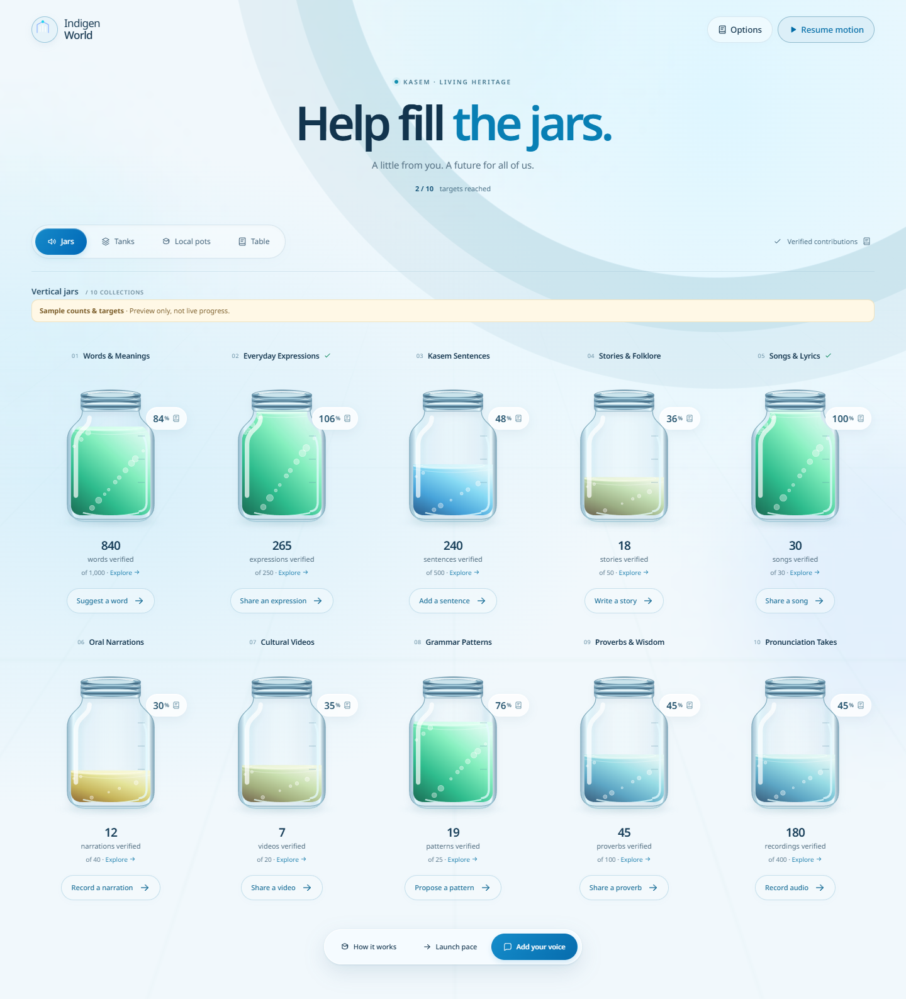
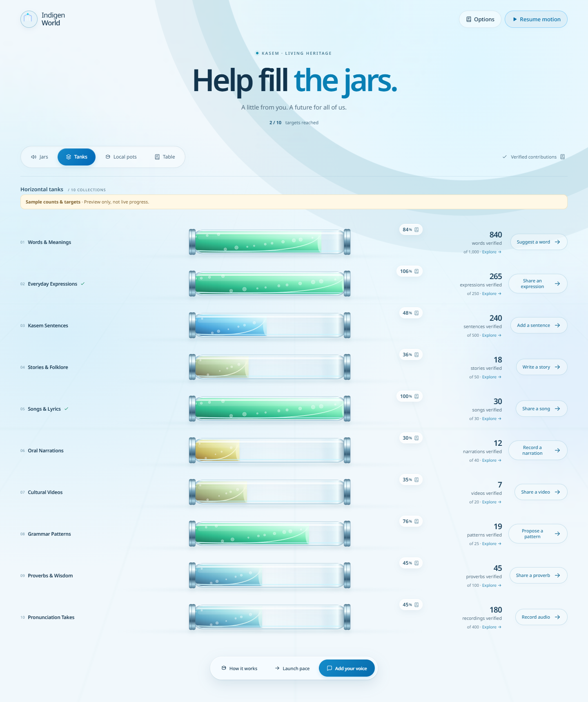
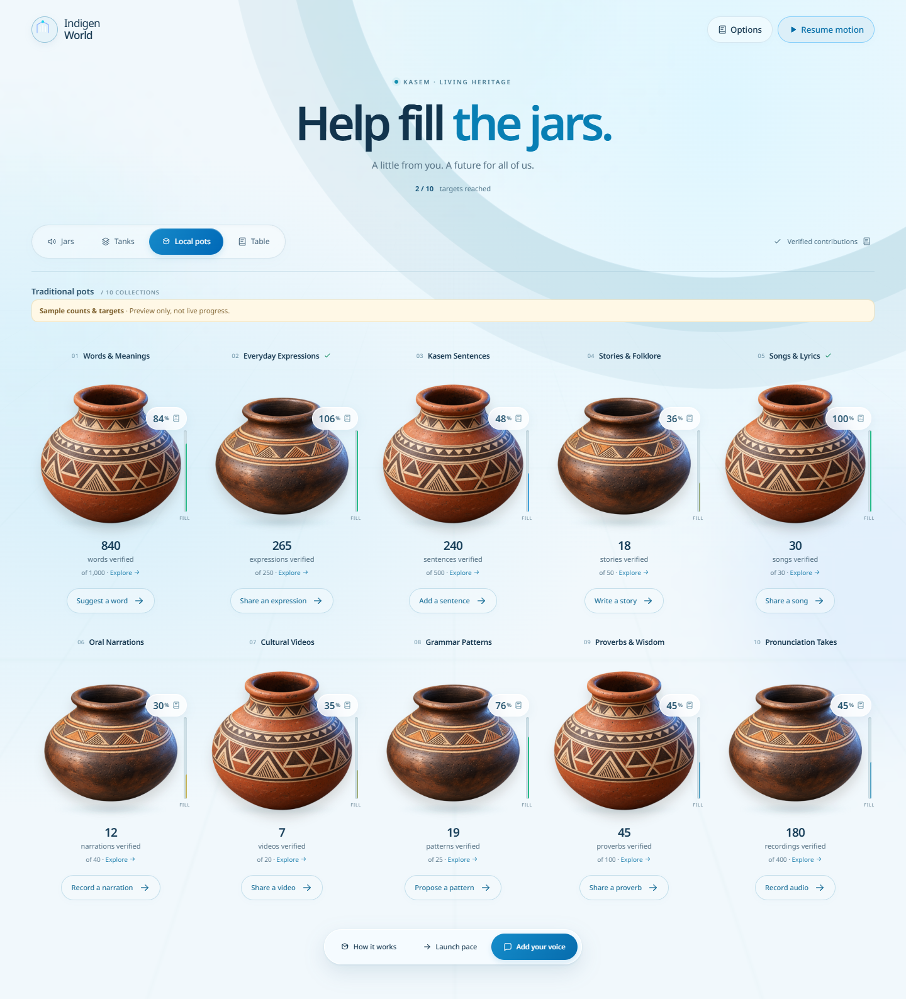
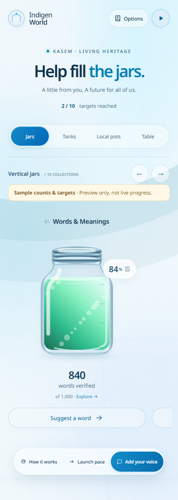
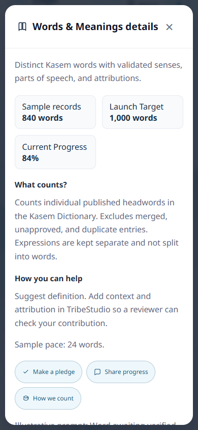

Our progress page has a new look: an open, airy space where glass jars, glowing tanks and textured clay pots bring community contributions into view.
The redesign is now available on the public website, with deployment and live browser checks completed on October 4, 2026.
People preserving Kasem can now explore ten contribution collections without reading through a wall of explanations. The vessels sit directly in the page, with soft shadows, hollow rims and glass reflections. Gentle floating motion and bubbles give the collections a sense of life.

Use Jars for upright glass vessels, Tanks for a horizontal overview, Local pots for textured pottery illustrations, or Table for a detailed data view. The page remembers your choice on the same device.


Tap or click a vessel to see what its collection includes, what counts toward the target and how to help. Pledge, sharing and counting details are available inside that popup. Each collection still has a direct contribution button leading to TribeStudio.
On a phone, swipe through the jars and pots or use the previous and next arrows. The horizontal tanks remain a vertical list. Keyboard users can open a vessel with Enter or Space, close a popup with Escape and use Alt+T to switch to the data table.


The numerical counts and percentages remain visible. The glass liquid changes from red through yellow and blue to green as a target fills. A completed vessel stays visually full while its true percentage can show progress beyond 100%. An unset target does not invent a fill level.
Pause motion is available at the top of the page. The page also respects your device’s reduced-motion preference and stops its decorative animation when the browser tab is hidden.
This update changes how progress is presented. It does not change the collection queries, approve new submissions or establish a new launch date. Existing source and cache limitations still apply; the pronunciation collection retains its existing published-entry counting query. Open How it works for counting and launch information.
The redesigned page is available at indigenworld.com/progress. The deployed assets match the tested production build, and live browser checks confirmed the views and mobile controls. The screenshots above demonstrate the actual interface with explicitly labelled development sample data; live totals may differ.